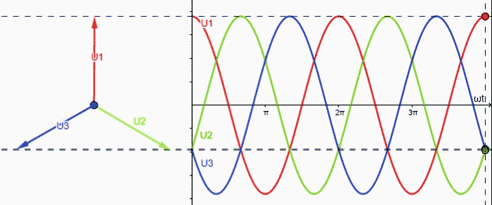

class: center, middle # EE-361 # 3-PHASE POWER ## Ozan Keysan [keysan.me](http://keysan.me) Office: C-113 <span class="meta">•</span> Tel: 210 7586 --- ## Electric Plugs & Sockets <img src="https://www.netio-products.com/files/styles/glossary_552x414/public/Glossary_type-F-German-electrical-plug-type-schuko.png?itok=v1PLk2qK" alt="Drawing" style="width: 500px;"/> ### [Why some countries use different voltage, frequency?](https://www.quora.com/Why-does-India-use-230-V-50HZ-while-the-USA-uses-120V-60HZ) --- <img src="https://i.redd.it/lejtjspbik511.jpg" alt="Drawing" style="width: 600px;"/> [Different plugs around the world](http://www.worldstandards.eu/electricity/plugs-and-sockets/), [but WHY?](https://www.quora.com/Why-does-India-use-230-V-50HZ-while-the-USA-uses-120V-60HZ) --- ## Electric Plugs & Sockets <img src="https://imgs.xkcd.com/comics/standards.png" alt="Drawing" style="width: 800px;"/> --- # Introduction to Three Phase ## Industrial Electric Plugs <img src="https://rukminim1.flixcart.com/image/832/832/k3t21zk0/wire-joint-connector/b/x/r/2-industrial-plug-and-socket-32-a-x-5-pin-415v-weatherproof-ip44-original-imafmuxqgpym6hzx.jpeg" alt="Drawing" style="width: 450px;"/> --- # Introduction to Three Phase ## Industrial Electric Plugs <img src="https://1.bp.blogspot.com/-0D8kS1zy0WQ/XeENlYkdrwI/AAAAAAAACWA/0q_9JmkCDms-7D5VEbzIzuY5uyJi1pFnQCLcBGAsYHQ/s640/Industrial%2BPlug%2BTerminal%2BIdentification.jpg" alt="Drawing" style="width: 450px;"/> --- ## Industrial Electric Plugs <img src="https://www.plugsocketmuseum.nl/IEC/IEC60309-plugSizes.jpg" alt="Drawing" style="width: 750px;"/> ### [IEC 60309 industrial standard](https://www.plugsocketmuseum.nl/IEC60309_2.html) --- # Expired 3-Phase Color Code (Before 2011) <img src="./images/ee361/old_color_code.jpg" alt="Drawing" style="width: 550px;"/> --- # New 3-Phase Color Code (Since 2011) <img src="./images/ee361/new_color_code.jpg" alt="Drawing" style="width: 550px;"/> --- # Electric Vehicle Chargers <img src="https://www.researchgate.net/profile/Pawan-Maske/publication/356892277/figure/fig2/AS:1098983523008515@1639029498915/Types-of-electric-vehicle-chargers-30-i-Combined-Charging-System-Charger-CCS-This.jpg" alt="Drawing" style="width:800px;"/> ### [What are all these pins for?](http://tesla.o.auroraobjects.eu/Design_Guide_Combined_Charging_System_V3_1_1.pdf) --- # CCS: Combined Charging System <img src="https://b2232832.smushcdn.com/2232832/wp-content/uploads/2018/11/chademo-css.jpg?lossy=1&strip=0&webp=1" alt="Drawing" style="width:800px;"/> --- # Introduction to Three Phase ## Offshore Power Plugs -- <img src="http://i.kinja-img.com/gawker-media/image/upload/s--lCQmivgV--/c_fit,fl_progressive,q_80,w_636/yvnjg8sxmbvgya1luf6n.jpg" alt="Drawing" style="width:800px;"/> --- # Introduction to Three Phase ## Offshore Power Plugs <img src="http://i.kinja-img.com/gawker-media/image/upload/s--Mb48YYZM--/c_fit,fl_progressive,q_80,w_636/vs2m6ydklatpy6u0ngje.jpg" alt="Drawing" style="width:700px;"/> --- # Introduction to Three Phase ## Transmission Lines <img src="https://cdn-images-1.medium.com/max/2000/1*6lCTsj6fN1y2nP_Y44Icqw.jpeg" alt="Drawing" style="width: 800px;"/> --- # WHY 3 PHASE? (but not 2 or 5?) -- <iframe width="800" height="500" src="https://www.youtube.com/embed/mQIYJ3Y-Tpo" title="YouTube video player" frameborder="0" allow="accelerometer; autoplay; clipboard-write; encrypted-media; gyroscope; picture-in-picture" allowfullscreen></iframe> --- # WHY 3 PHASE? (but not 2 or 5?) -- <img src="http://upload.wikimedia.org/wikipedia/commons/thumb/c/cc/3_phase_AC_waveform.svg/2000px-3_phase_AC_waveform.svg.png" alt="Drawing" style="width: 700px;"/> --- # WHY 3-PHASE? -- - ## More power per unit wire length. -- - ## Constant Power [Power Graphs](https://docs.google.com/spreadsheets/d/1RP-MsrHwybAG6J3CFTbdLOCTvGdIdkaWUkhRuAHPWd0/edit?usp=sharing) -- - ## Rotating MMF ### [3-phase](http://people.ece.umn.edu/users/riaz/animations/sinwaves0.gif), [phasor](http://people.ece.umn.edu/users/riaz/animations/vecmovieslow.gif)(wait until EE362 for details) --- # Voltages & Currents ## \\(Va = V_{max} \mathrm{sin} (\omega t)\\) ## \\(Vb = V_{max} \mathrm{sin} (\omega t - 2 \pi /3)\\) ## \\(Vc = V_{max} \mathrm{sin} (\omega t - 4 \pi /3)\\) --- # Voltages & Currents  --- # 3 Phase Phasors  --- # How to measure voltage & currents? <img src="https://upload.wikimedia.org/wikipedia/commons/4/48/3-phase_flow.gif" alt="Drawing" style="width: 800px;"/> --- # How to measure voltage & currents? <img src="3phase_voltages.png" alt="Drawing" style="width: 800px;"/> --- # How to measure voltage & currents? ## \\(\vec{V\_{ab}}=\vec{V\_{an}} + \vec{V\_{nb}} = \vec{V\_{an}} - \vec{V\_{bn}} \\) ## If \\(\vec{V\_{an}} = V \angle 0^∘ \\) -- ## \\(\vec{V\_{ab}}= \sqrt 3 V \angle 30^∘\\) --- # What is the Grid Voltage Level? ## Used to be 220 V -- (line-to-neutral RMS) -- ## Peak (line-to-neutral) \\(= 220 \sqrt{2} = 311 \\) V -- ## RMS (line-to-line) \\(= 220 \sqrt{3} \approx 380 \\) V --- # What is the Grid Voltage Level? # NOW [the standard is 230 V](http://www.schneider-electric.co.uk/en/faqs/FA144717/) ## ± 10% (line-to-neutral RMS) ### Due to connection of UK to [European System](https://blogs.dnvgl.com/energy/wp-content/uploads/2014/08/grid.png) -- ## Peak (line-to-neutral) \\(= 230 \sqrt{2} = 325 \\) V -- ## RMS (line-to-line) \\(= 230 \sqrt{3} \approx 400 \\) V --- # Delta (\\(\Delta\\)) - Wye (Y) Connection <img src="http://lukeb.members.sonic.net/stator_files/stator_delta_y.png" alt="Drawing" style="width: 700px;"/> --- # Wye(or Star) Connection (Y) <img src="http://upload.wikimedia.org/wikipedia/commons/thumb/4/48/3_Phase_Power_Connected_to_Wye_Load.svg/2000px-3_Phase_Power_Connected_to_Wye_Load.svg.png" alt="Drawing" style="width: 500px;"/> ### \\( |V\_{line-to-line}| = \sqrt{3} \; |V\_{phase}|\\) ### \\( |I\_{line}| = |I\_{phase}|\\) --- # Delta Connection (\\(\Delta\\)) <img src="https://www.emetor.com/static/glossary/deltaStar.jpg" alt="Drawing" style="width: 700px;"/> ### \\( |V\_{line-to-line}| = |V\_{phase}|\\) ### \\( |I\_{line}| = \sqrt{3} \; |I\_{phase}|\\) --- #Power Relations -- ## Regardless of the connection type ## \\( S= 3V\_{phase}I\_{phase}\\) -- ## or ## \\( S= \sqrt{3}V\_{line-to-line}I\_{line}\\) #### [Review of three phase AC circuits](http://www.egr.unlv.edu/~eebag/EE%20340%20-%20Review%203-Phase%20Ckts.pdf) --- # Impedance Transformation  ## \\(Z_{\Delta} = 3 Z\_Y \\) --- # Examples --- ## You can download this presentation from: [keysan.me/ee361](http://keysan.me/ee361)